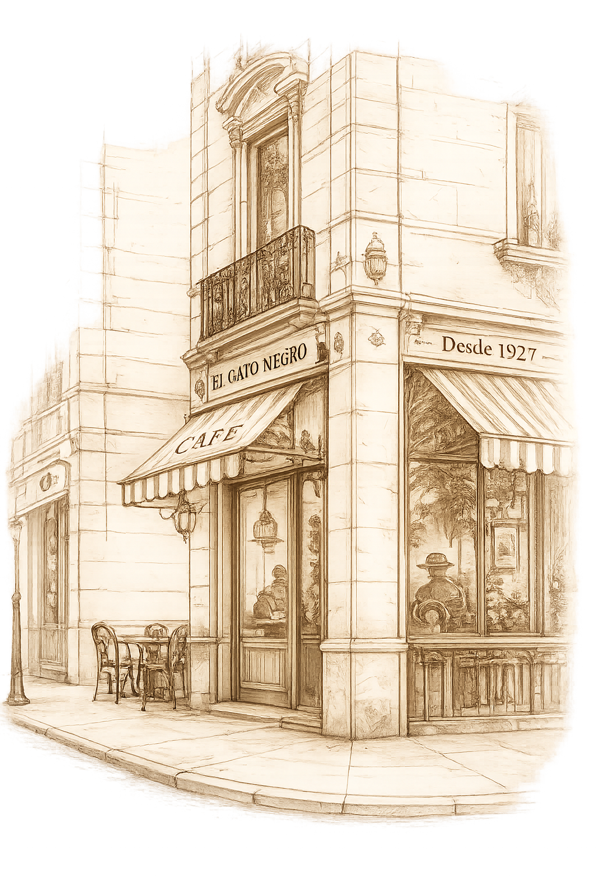
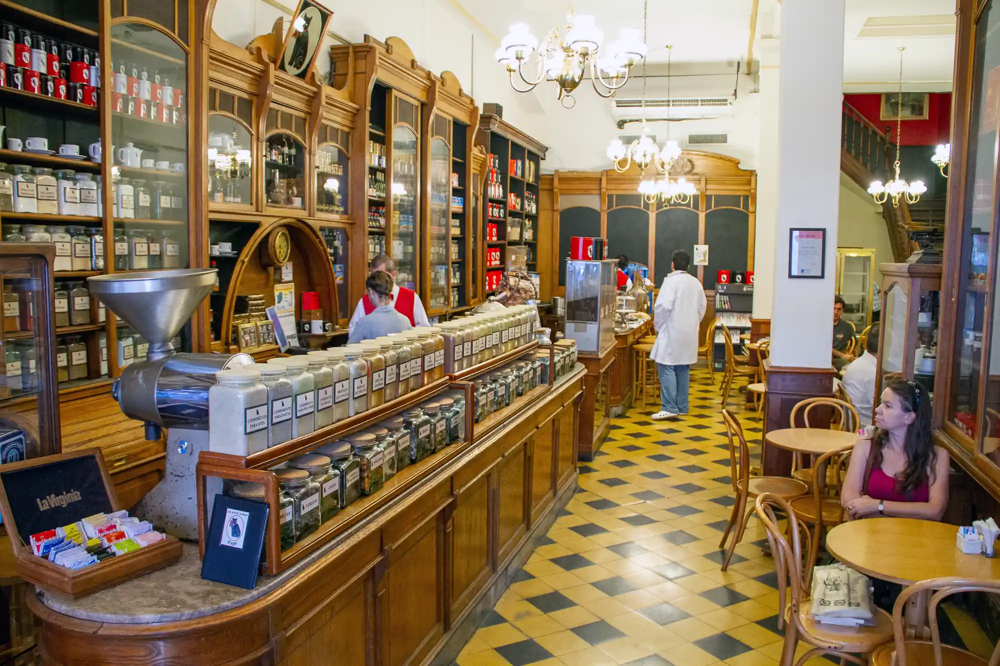

✦
Bienvenidos
Desde 1927 el lugar donde se cruzan una experiencia única en Buenos Aires. Café, té y especias de todo el mundo en un lugar lleno de historia.
95+
Años
50+
Variedades
1000+
Clientes

¿Por qué elegir Café Gato Negro?
☕
Café Premium
Selección de cafés de alta calidad con aromas y sabores únicos.
🌿
Tés y Especias
Más de 50 variedades provenientes de distintos lugares del mundo.
🏛️
Tradición
Más de 95 años siendo un referente histórico de Buenos Aires.

☕